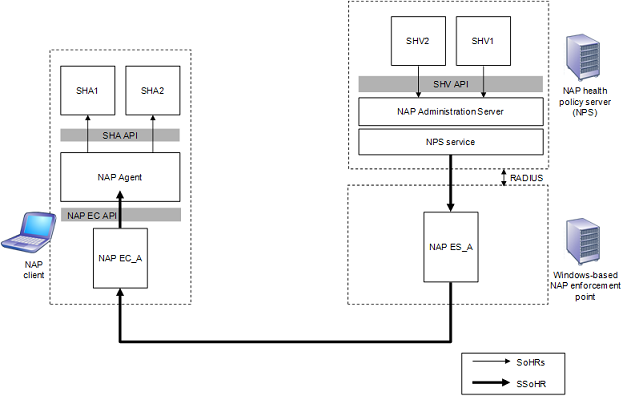

title: NAP Client and Server-side Component Communication
description: NAP Client and Server-side Component Communication
ms.assetid: 7658cf0c-607b-44ba-b579-72082d0d1f51
ms.topic: article
ms.date: 05/31/2018
NAP Client and Server-side Component Communication
[!Note]
The Network Access Protection platform is not available starting with Windows 10
Â
The NAP Agent component can communicate with the NAP Administration Server component through the following process:
- The NAP Agent passes the SSoH to the NAP EC.
- The NAP EC passes the SSoH to the NAP ES.
- The NAP ES passes the SSoH to the Network Policy Server (NPS) service.
- The NPS service passes the SSoH to the NAP Administration Server.
An SHA can communicate with its corresponding SHV through the following process:
- The SHA passes its SoH to the NAP Agent.
- The NAP Agent passes the SoH, contained within the SSoH, to the NAP EC.
- The NAP EC passes the SoH to the NAP ES.
- The NAP ES passes the SoH to the NAP Administration Server.
- The NAP Administration Server passes the SoH to the SHV.
The figure below shows the communication process from NAP client components to NAP server-side components.
The NAP Administration Server can communicate with the NAP Agent through the following process:
- The NAP Administration Server passes the SoHRs to the NPS service.
- The NPS service passes the SSoHR to the NAP ES.
- The NAP ES passes the SSoHR to the NAP EC.
- The NAP EC passes the SSoHR to the NAP Agent.
The SHV can communicate with its corresponding SHA through the following process:
- The SHV passes its SoHR to the NAP Administration Server.
- The NAP Administration Server passes the SoHR to the NPS service.
- The NPS service passes the SoHR, contained within the SSoHR, to the NAP ES.
- The NAP ES passes the SoHR to the NAP EC.
- The NAP EC passes the SoHR to the NAP Agent.
- The NAP Agent passes the SoHR to the SHA.
The figure below shows the communication process from NAP server-side components to NAP client components.

Â
Â